GTA VI
Waink It en GTA VI: cómo escanear coches y leer sus datos
Waink It muestra modelo, alarma, cierre, rastreador, estado y opciones de venta o registro de los coches.
Consejos prácticos para jugar, comprar y encontrar tu próxima historia.
Lectura destacadaWaink It muestra modelo, alarma, cierre, rastreador, estado y opciones de venta o registro de los coches.
Ordenadas por última actualización. Cada artículo muestra la fecha de revisión.
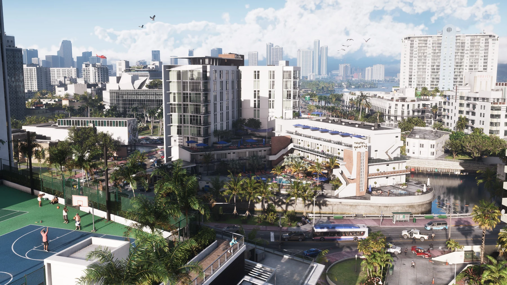
Qué observan los primeros análisis en GTA VI: gimnasios, paseos, conversaciones y actividad social.

Cómo desplazarte rápido en GTA VI con taxis y transporte público, qué servicios requieren ir a una parada y cuándo puedes saltar el trayecto.

Guía para vender coches: qué puede comprar Pay 'n' Spray, Moses o Randy y cuándo registrar un vehículo para conservarlo.

Qué vehículos se asocian a la Ultimate Edition de GTA VI y cómo separar un extra de edición del catálogo general.

La Snap Gun abre puertas cerradas sin romperlas. Te contamos el progreso de historia que la desbloquea.

Qué cambia al robar coches: entradas ruidosas, coches keyless, alarmas y herramientas que se consiguen al avanzar.
Explora la biblioteca por tema y formato.

GTA VI no incluye un menú de repetición de misiones en su versión de lanzamiento. Te explicamos el papel de los guardados manuales.
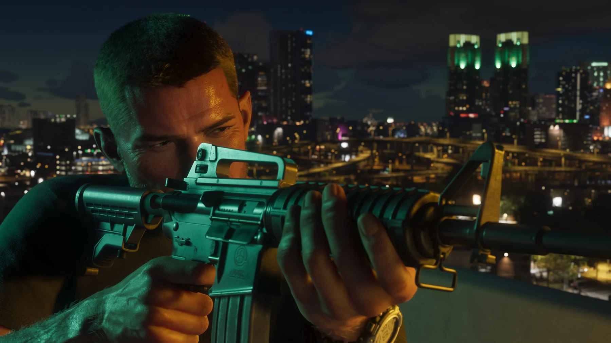
Los análisis observan redes, fama y teléfonos en GTA VI. Separa la crítica cultural de funciones aún no confirmadas.
Quiénes son Bae-Luxe y Roxy: su amistad, música y estrategia de viralidad en GTA VI.

Rockstar presenta a Raul Bautista como atracador experimentado que busca aliados para golpes arriesgados.
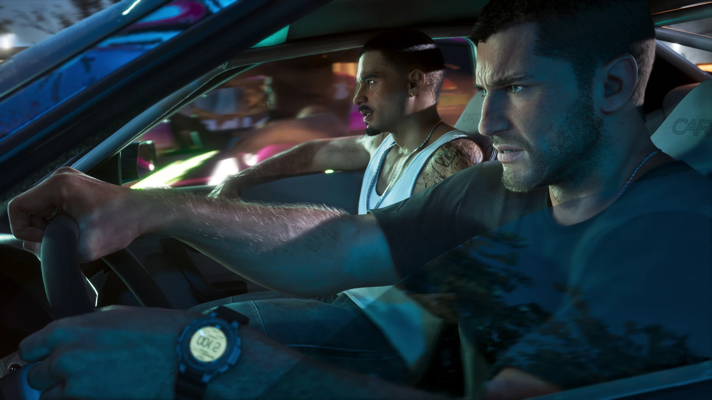
GTA VI no ofrece un modo completo en primera persona como ajuste de cámara. Separa las vistas puntuales de los glitches reportados.
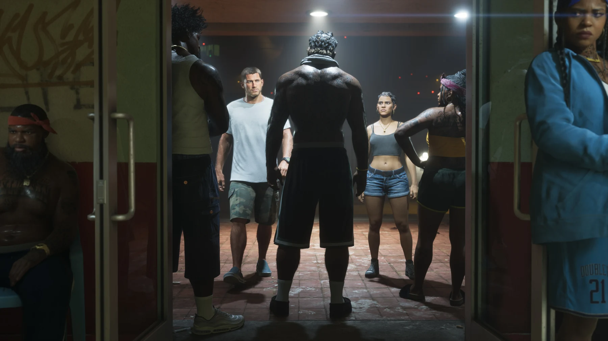
Sí, GTA VI permite volver al mundo libre después de la historia. Te explicamos qué ocurre con el guardado y cómo proteger un punto previo.
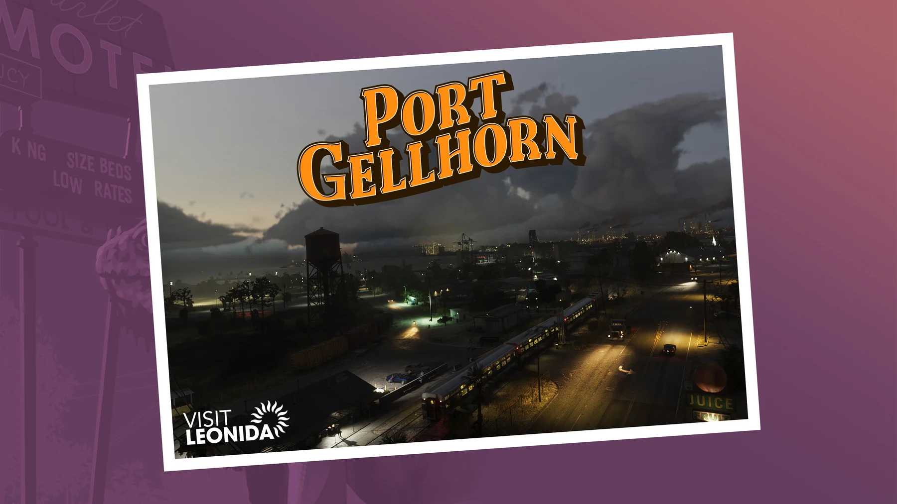
Rockstar incluye Port Gellhorn entre los destinos de Leonida. Separamos la región confirmada de mapas especulativos.
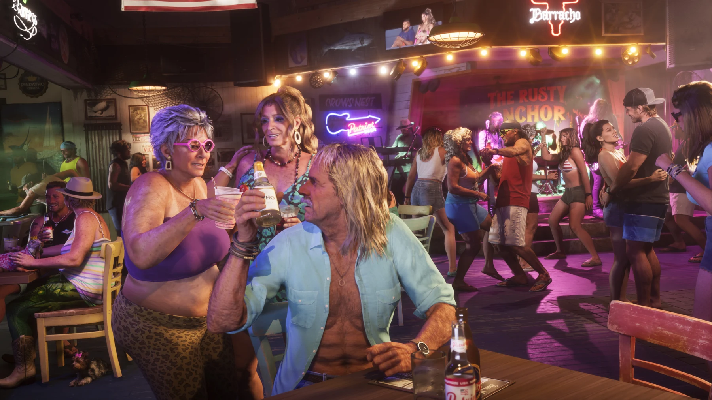
Qué se sabe del Criminal Profile de Jason y Lucia, cómo consultarlo y por qué no es un medidor simple de bien o mal.

Guía del sistema de búsqueda de GTA VI: seis estrellas, indicadores de estado y correcciones del parche inicial.

Mount Kalaga National Park es una zona nombrada oficialmente. Reunimos evidencia disponible y los límites de las postales.

Biografía de Lucia Caminos: su familia, su estancia en la prisión de Leonida y el plan para cambiar su situación.
Guía sin mapa inventado de Leonida Keys: qué confirma Rockstar y qué pistas visuales no prueban mecánicas.

Qué se sabe de la relación: premisa oficial, objetivos y lecturas críticas tras el lanzamiento.

Quién es Jason Duval según Rockstar: su pasado militar, su vida en los Keys y su vínculo con Lucia.
Guía del Índice de GTA VI: localiza historia, robos, actividades, vehículos y objetivos nuevos sin confundirlos en el mapa.
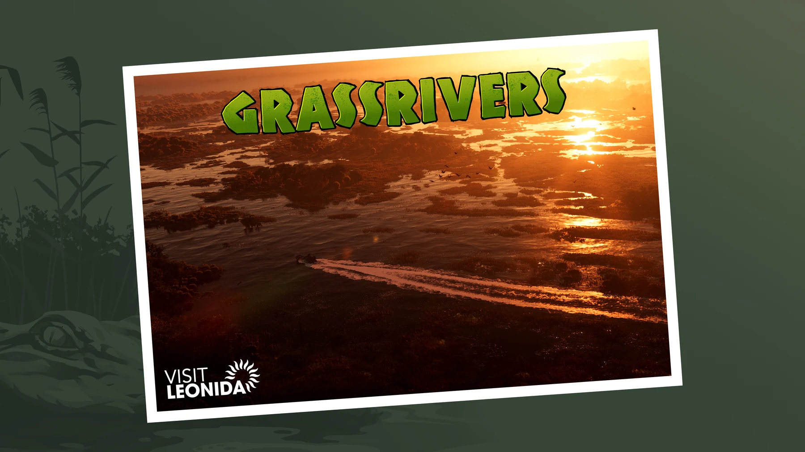
Qué se ha confirmado de Grassrivers y cómo se conecta con el reparto oficial, sin inventar puntos de interés.
GamesRadar reporta una aparición llamada Little Sam en Boobie Time. Te contamos qué se ve y por qué su identidad sigue siendo una lectura.
La duración depende del estilo de juego. Reunimos estimaciones iniciales y separamos campaña directa de exploración.
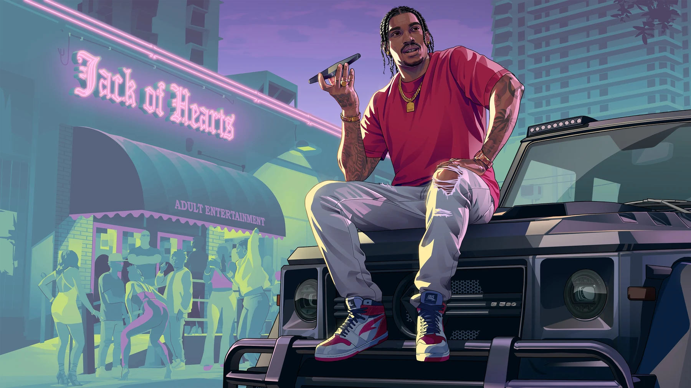
Dre'Quan Priest busca abrirse paso en la música de Vice City. Repasamos su vínculo con Boobie Ike y Real Dimez.
Quince observaciones documentadas en reseñas y fuentes oficiales, separando escenas vistas de interpretaciones editoriales.
Activa el esquema clásico de controles desde Opciones y recupera una distribución más cercana a GTA V.
Comparativa provisional basada en fichas vistas en GTA VI: ratings de pista y límites del ranking.
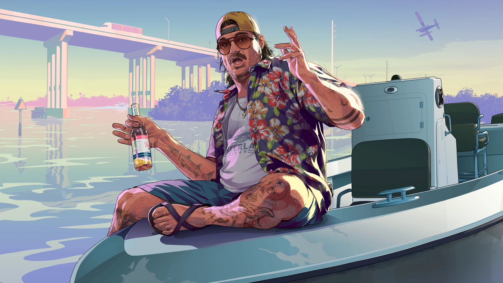
Biografía oficial de Cal Hampton: amistad con Jason, vínculo con Brian y personalidad conspirativa.
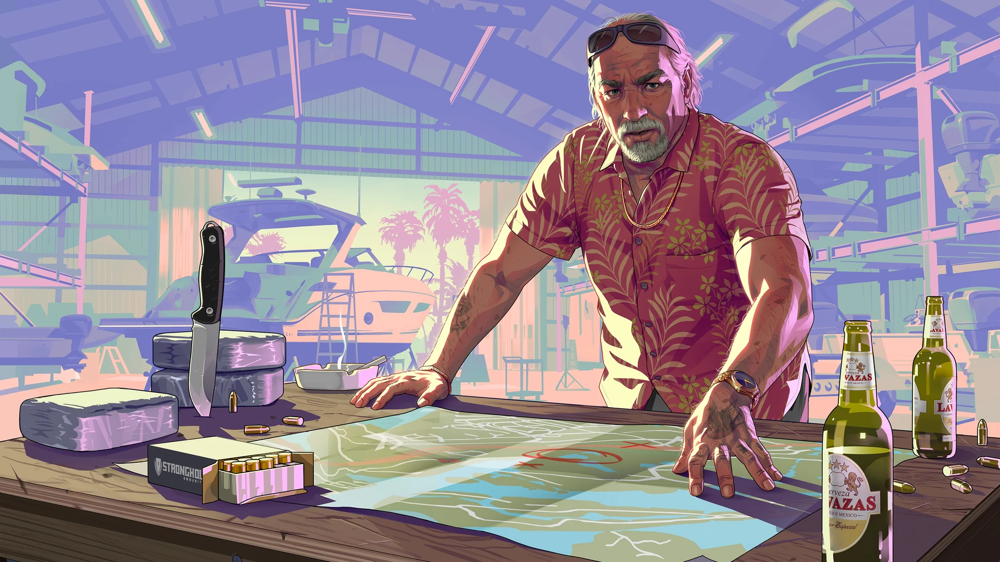
La biografía de Brian Heder: su pasado de contrabandista, el astillero y la relación de conveniencia con Jason.
Quién es Boobie Ike: sus negocios en Vice City, el estudio de grabación y la relación profesional con Dre'Quan Priest.
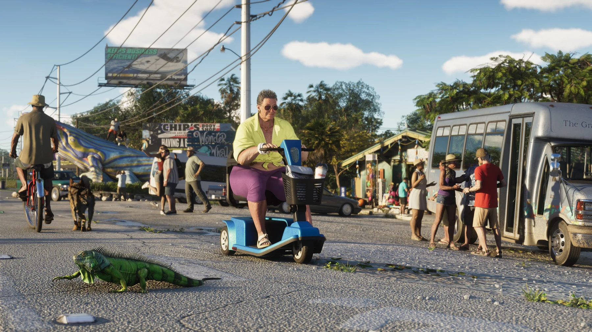
Repaso de modelos acuáticos identificados en fuentes oficiales y guías: kayak, lancha, motos de agua y aerodeslizador.
Síntesis de reseñas de GTA VI: qué destacan AP, TechRadar y Windows Central y qué matices conviene considerar.
Ambrosia es uno de los destinos oficiales de Leonida. Separamos la región de ubicaciones y actividades todavía no documentadas.

Guía para empezar en Valorant: qué hace cada rol, cómo funcionan las rondas y la economía, y qué practicar antes de entrar al competitivo.

Consulta trucos publicados de GTA VI, sus requisitos y cómo introducirlos en PS5 y Xbox. Los códigos se desbloquean al terminar la historia y afectan al guardado y los logros.
Aprende cómo funcionan los robos de GTA VI, qué cambia según el lugar y por qué puedes volver a algunos objetivos. Consejos sin glitches ni rutas inventadas.
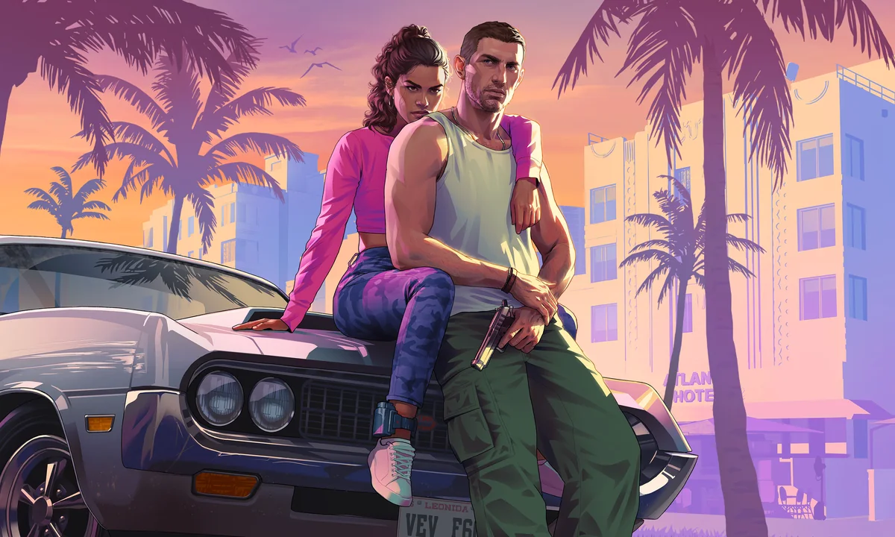
Cuántas misiones principales tiene GTA VI, cómo seguir el progreso por capítulos y qué tener en cuenta antes de consultar una lista completa.

Guía con algunos secretos de GTA VI hallados tras el estreno: el Skunk Ape, el encuentro ovni, una torre de radio y la casa relacionada con un misterio. Incluye spoilers.
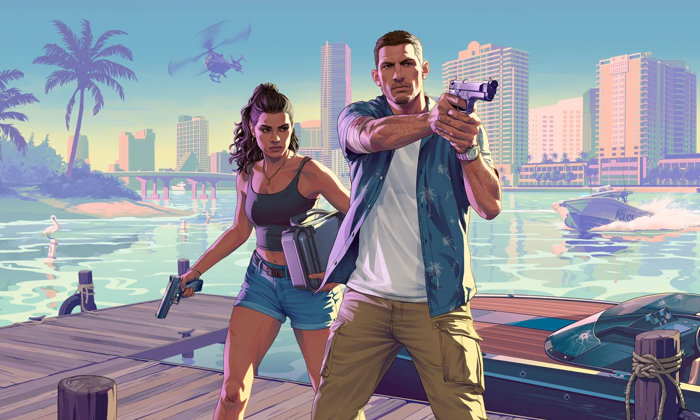
Pasos para guardar manualmente en GTA VI, usar las 15 ranuras disponibles y evitar perder una sesión de progreso al probar trucos.
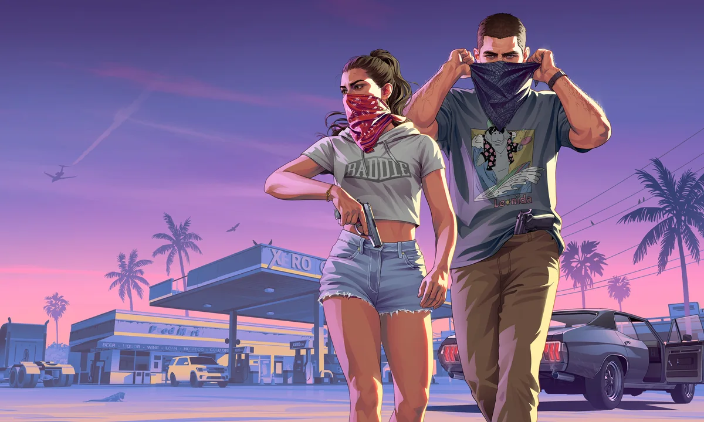
Guía de dinero de GTA VI: vender vehículos, robos de joyerías y atracos a bancos. Revisa qué se desbloquea en cada capítulo y cómo proteger el efectivo.

Consejos para empezar GTA VI: organiza los guardados, conserva efectivo para compras, ajusta los controles y explora Leonida a tu ritmo.

Rockstar publicó las notas de la actualización de GTA VI del 23 de noviembre. Repasamos los siete problemas corregidos y qué hacer si siguen apareciendo.
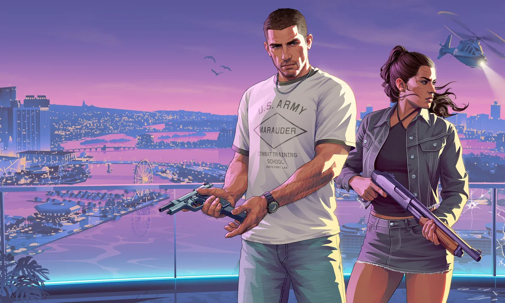
Repasamos opciones de accesibilidad de GTA VI: alto contraste, cámara, subtítulos, lectura de interfaz y ayudas para actividades y controles.

Qué se puede confirmar sobre los vehículos de GTA VI y cómo consultar modelos, conducción y transporte sin convertir una imagen en una lista definitiva.

Una guía para entender los easter eggs, descubrir secretos con paciencia y comprobar si un hallazgo está confirmado o es un rumor.

Comparación práctica de PS5 y Xbox Series X|S según biblioteca, servicios, almacenamiento, amigos y presupuesto regional.
Una guía para identificar el precio y el contenido real de cada edición de GTA VI sin propagar cifras desactualizadas.
Películas de animación japonesa para una sesión compartida, con recomendaciones por tono y una nota para revisar edades y temas.

Guía para elegir un mando por ergonomía, conexión, compatibilidad, batería y accesibilidad, sin recomendar una talla única.

Juegos y ajustes para sacar partido a un PC modesto, con una guía para verificar requisitos y evitar promesas de rendimiento.

Vice City, Leonida Keys, Port Gellhorn, Ambrosia, Grassrivers y Mount Kalaga: nombres que Rockstar ya ha mostrado.

Juegos fáciles de empezar para una pausa, una sesión larga o una partida con amigos, con recomendaciones por ritmo y plataforma.

Una guía práctica para elegir gráfica, procesador, memoria y monitor según resolución, juegos y presupuesto.

Guía para escoger consola al calcular coste total, biblioteca, accesorios y servicios, sin depender de precios que cambian por región.

Recomendaciones para dar el siguiente paso desde los grandes shonen, ordenadas por acción, aventura, humor y duración.
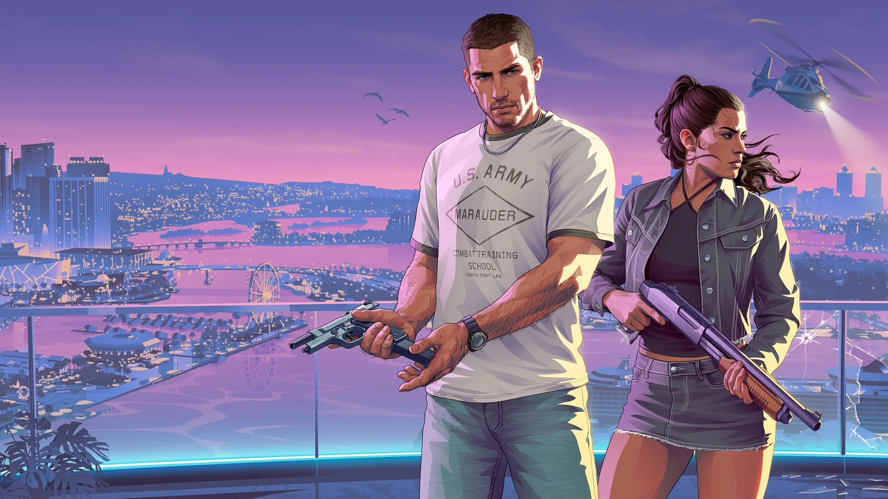
Una guía para distinguir la trama principal, las actividades secundarias y las escenas de los tráilers de GTA VI.

Qué se sabe del mapa de GTA VI tras el lanzamiento: Vice City, Leonida Keys, Port Gellhorn, Ambrosia, Grassrivers y Mount Kalaga.

Una guía para elegir tu primer manga, entender tomos y demografías y encontrar ediciones legales en español.

Recomendaciones para principiantes organizadas por duración, género y tipo de historia, con opciones fáciles de probar.